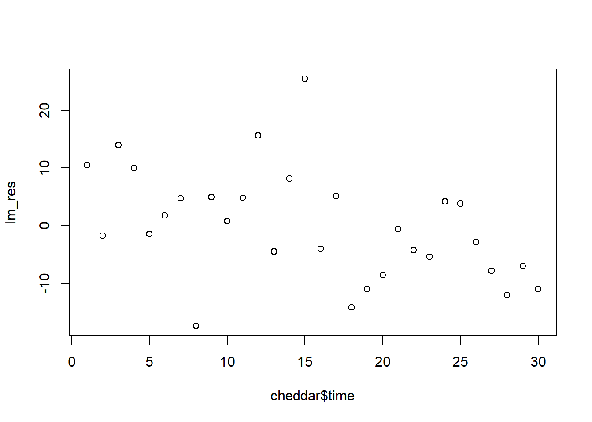

#install.packages("faraway")
library(faraway)Generalized Least Squares
- Global Warming Data Estimating Northern Hemisphere from 8 climate proxies
- Each observation represents a year of data (1865-2000)
Question: What could go wrong if we use OLS?
Anytime you have data that is collected over time you need to be concerned that you might end up with some correlated error. Here, we might expect that from year to year there might be some sort of correlation between temperatures and if we have a very cold year then next year might be colder than average. This implies some sort of correlation phenomenon. This means GLS!
globwarm<-na.omit(globwarm)# omitting missing values lmod<-lm(nhtemp ~wusa + jasper + westgreen + chesapeake + tornetrask + urals + mongolia+tasman,data=globwarm)
# our concern here is that our errors are correlated
n <- length(residuals(lmod))
# correlation between residuals lagged by one year. (First one removes the first residuals thus looking at years 2-n). The next removes the final one and looks at 1 to n-1 and taking the correlation between a year and the subsequent year residuals.
cor(residuals(lmod)[-1],residuals(lmod)[-n])[1] 0.583339#here 0.5833 is the phi value (Note: We don’t know the value of sigma because we don’t know the population size.)
How could we fit GLS? We need to estimate our BIG SIGMA that basically tells us the structure we are expecting from our correlation between errors and then we will use that to be able to fit a model that incorporates that correlation appropriately.
If we assume the errors take a simple auto regressive form such that the error is correlated with the prior,
\[ \epsilon_{i+1} = \phi \epsilon_i + \delta_i \]
such that,
\[ \delta_i \sim N(0, \gamma^2) \] Note that \(\phi\) is the correlation coefficient. We can estimate \(\phi\) from the model. \(\delta_i\) is the additional error term that we can expect since it is normally distributed. The 0.5833 was what we estimated our \(\phi\) to be.
- Under this assumption
\[\Sigma_{ij} = \phi^{|i-j|}\].
We can estimate it like this:
X <- model.matrix(lmod)
Sigma <- diag(n) # diagonal matrix (nxn) (length of residuals 1 on diags - 0 elsewhere
Sigma <- 0.5833^abs(row(Sigma) - col(Sigma))y <- globwarm$nhtemp
Sigma_inv <- solve(Sigma)
XTX_inv <- solve(t(X)%*% Sigma_inv %*% X)beta_hat <- XTX_inv %*% t(X) %*% Sigma_inv %*% y
beta_hat [,1]
(Intercept) -0.234134783
wusa 0.068425906
jasper -0.218438446
westgreen 0.003880871
chesapeake -0.014952072
tornetrask 0.057691347
urals 0.222078555
mongolia 0.055247801
tasman 0.122999856res <- y - X%*%beta_hat
#res
cor(res[-1],res[-n])[1] 0.5887776# the correlation did not improve at all but we will discuss this shortlySimilar to what we had before, however there is another way to do it.
P <- chol(Sigma) # P is the square root of Sigma matrix (choleski decomposition)
P_inv <- solve(t(P))
PX <- P_inv %*% X
PY <- P_inv %*% y
lm(PY ~ PX -1) # -1 because PX already has an intercept in it so -1 makes sure that no additional intercept is fitted
Call:
lm(formula = PY ~ PX - 1)
Coefficients:
PX(Intercept) PXwusa PXjasper PXwestgreen PXchesapeake
-0.234135 0.068426 -0.218438 0.003881 -0.014952
PXtornetrask PXurals PXmongolia PXtasman
0.057691 0.222079 0.055248 0.123000 We obtain the same values
matrix(lm(PY ~ PX -1)$coef) [,1]
[1,] -0.234134783
[2,] 0.068425906
[3,] -0.218438446
[4,] 0.003880871
[5,] -0.014952072
[6,] 0.057691347
[7,] 0.222078555
[8,] 0.055247801
[9,] 0.122999856The nlme package has a function for fitting linear models like this:
library(nlme)
glmod <- gls(nhtemp ~ wusa + jasper + westgreen + chesapeake + tornetrask + urals + mongolia + tasman, correlation = corAR1(form = ~ year), data = globwarm)
# lagging by 1 corAR1summary(glmod)Generalized least squares fit by REML
Model: nhtemp ~ wusa + jasper + westgreen + chesapeake + tornetrask + urals + mongolia + tasman
Data: globwarm
AIC BIC logLik
-108.2074 -76.16822 65.10371
Correlation Structure: AR(1)
Formula: ~year
Parameter estimate(s):
Phi
0.7109922
Coefficients:
Value Std.Error t-value p-value
(Intercept) -0.23010624 0.06702406 -3.433188 0.0008
wusa 0.06673819 0.09877211 0.675678 0.5004
jasper -0.20244335 0.18802773 -1.076668 0.2835
westgreen -0.00440299 0.08985321 -0.049002 0.9610
chesapeake -0.00735289 0.07349791 -0.100042 0.9205
tornetrask 0.03835169 0.09482515 0.404446 0.6865
urals 0.24142199 0.22871028 1.055580 0.2930
mongolia 0.05694978 0.10489786 0.542907 0.5881
tasman 0.12034918 0.07456983 1.613913 0.1089
Correlation:
(Intr) wusa jasper wstgrn chespk trntrs urals mongol
wusa -0.517
jasper -0.058 -0.299
westgreen 0.330 -0.533 0.121
chesapeake 0.090 -0.314 0.230 0.147
tornetrask -0.430 0.499 -0.197 -0.328 -0.441
urals -0.110 -0.142 -0.265 0.075 -0.064 -0.346
mongolia 0.459 -0.437 -0.205 0.217 0.449 -0.343 -0.371
tasman 0.037 -0.322 0.065 0.134 0.116 -0.434 0.416 -0.017
Standardized residuals:
Min Q1 Med Q3 Max
-2.31122523 -0.53484054 0.02342908 0.50015642 2.97224724
Residual standard error: 0.204572
Degrees of freedom: 145 total; 136 residualWe can calculate a confidence interval on that using the intervals function.
intervals(glmod, which = "var-cov")Approximate 95% confidence intervals
Correlation structure:
lower est. upper
Phi 0.5099744 0.7109922 0.8383752
Residual standard error:
lower est. upper
0.1540709 0.2045720 0.2716263 Examples of correlated Errors
- Autocorrelation
- Grouped (blocked) data
- Spatial Data (data over states, example USA (regional-cluster))
Class Exercise (due 10/27/23)
(Code)
Using the cheddar data (in the faraway package), run the code below to add a time variable
library(faraway)
cheddar$time <- 1:nrow(cheddar)
head(cheddar) taste Acetic H2S Lactic time
1 12.3 4.543 3.135 0.86 1
2 20.9 5.159 5.043 1.53 2
3 39.0 5.366 5.438 1.57 3
4 47.9 5.759 7.496 1.81 4
5 5.6 4.663 3.807 0.99 5
6 25.9 5.697 7.601 1.09 6- Fit a Linear Model Predicting taste from Acetic, H2S and Lactic
# your code here
lin_mod <- lm(taste ~ Acetic + H2S + Lactic, data = cheddar)
summary(lin_mod)
Call:
lm(formula = taste ~ Acetic + H2S + Lactic, data = cheddar)
Residuals:
Min 1Q Median 3Q Max
-17.390 -6.612 -1.009 4.908 25.449
Coefficients:
Estimate Std. Error t value Pr(>|t|)
(Intercept) -28.8768 19.7354 -1.463 0.15540
Acetic 0.3277 4.4598 0.073 0.94198
H2S 3.9118 1.2484 3.133 0.00425 **
Lactic 19.6705 8.6291 2.280 0.03108 *
---
Signif. codes: 0 '***' 0.001 '**' 0.01 '*' 0.05 '.' 0.1 ' ' 1
Residual standard error: 10.13 on 26 degrees of freedom
Multiple R-squared: 0.6518, Adjusted R-squared: 0.6116
F-statistic: 16.22 on 3 and 26 DF, p-value: 3.81e-06- Plot the residuals from the model against time. What do you see?
# your code here
lm_res <- summary(lin_mod)$res
plot(cheddar$time,lm_res,type = "p")
YOUR ANSWER HERE
Something that seems like it could potentially be heteroskedastic, but it’s kinda hard to tell.
- Fit a GLS model using AR(1) correlation. Is there evidence of correlation between the errors?
# your code here
gls_mod <- gls(taste ~ Acetic + H2S + Lactic, correlation = corAR1(form = ~ time), data = cheddar)
summary(gls_mod)Generalized least squares fit by REML
Model: taste ~ Acetic + H2S + Lactic
Data: cheddar
AIC BIC logLik
214.94 222.4886 -101.47
Correlation Structure: AR(1)
Formula: ~time
Parameter estimate(s):
Phi
0.2641944
Coefficients:
Value Std.Error t-value p-value
(Intercept) -30.332472 20.273077 -1.496195 0.1466
Acetic 1.436411 4.876581 0.294553 0.7707
H2S 4.058880 1.314283 3.088284 0.0047
Lactic 15.826468 9.235404 1.713674 0.0985
Correlation:
(Intr) Acetic H2S
Acetic -0.899
H2S 0.424 -0.395
Lactic 0.063 -0.416 -0.435
Standardized residuals:
Min Q1 Med Q3 Max
-1.64546468 -0.63861716 -0.06641714 0.52255676 2.41323021
Residual standard error: 10.33276
Degrees of freedom: 30 total; 26 residualYOUR ANSWER HERE
From what I’m understanding, the phi-value is an indication of any correlation between residuals(?). If that’s the case, then the phi-value here is 0.2641944, which does not seem like a very high correlation value, so I would say no.
Knit and submit entire workbook to canvas 10/27/23 (Friday)